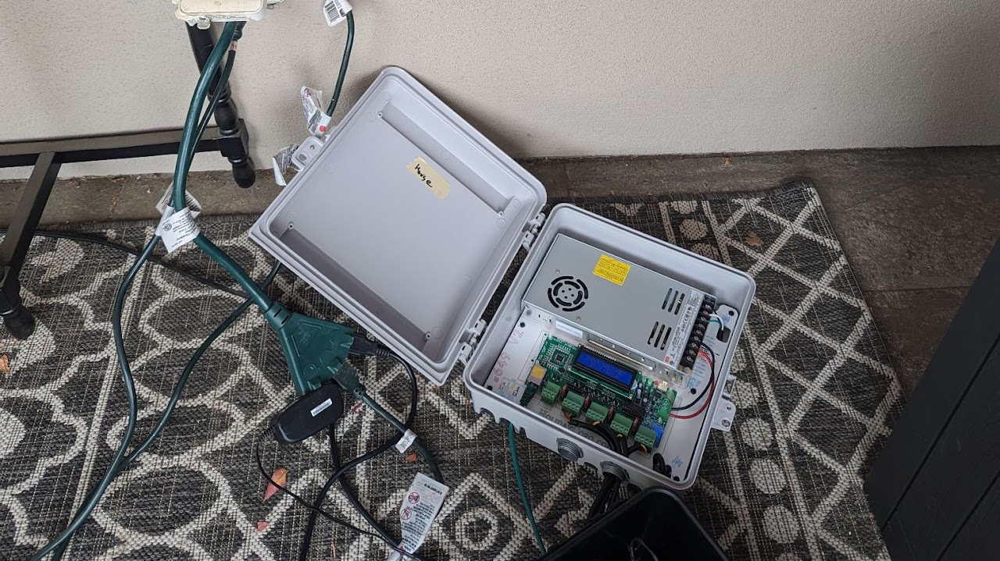

Kicking Off the 2023 Season (and Fixing an xLights Bug)
I decided to move up the show start date this year to Thanksgiving, to give people more time to enjoy the show. Turkey Day is of course earlier this year than usual, so November was a little rushed getting all the lights up and props out. But I got it done—the same setup that ended the 2022 season is out today.
But I seem to have failed to take notes last year on how I had hooked things up. Ooops. I really thought I had done that. I had some rough ideas (the controllers have names that describe what they control)—it was really which strand gets hooked up to which port on the controller. Luckily, xLights has a great feature (that I hadn't used in the past) to allow xLights to just "handle" it all for you, including programming channels and such. Sadly, it wasn't working with my AlphaPix 4 controllers. So I got frustrated enough that I actually started debugging the application, which ended up in my submission of a PR to fix the bug. That greatly simplified things.

Anyway, there are still a few more things to do before I can declare that I'm done tweaking the 2023 season:
- I need to retake the house photo that I use in xLights to tell it where exactly the lights are. The plans are bigger this year, which required some moving of props. You probably won't notice the difference in sequencing afterwards, but I like to believe I can.
- I've got 2 props (a tree and a star) that didn't make it out last year because I ran out of time to solder things together. I plan to get them out sometime early in December.
- I bought a faster Raspberry Pi in mid-December last year, but (again) ran out of time before I was able to get it set up. The really old one I'm using is a little flaky (it hangs sometimes, and sometimes fails to boot) and also seems just a touch underpowered for some of the sequences (causing glitches in the audio, for example). I'm hoping the newer faster Raspberry Pi can fix both those problems.
- I'd like to sequence at least one more song to go into the show—not sure yet exactly what.